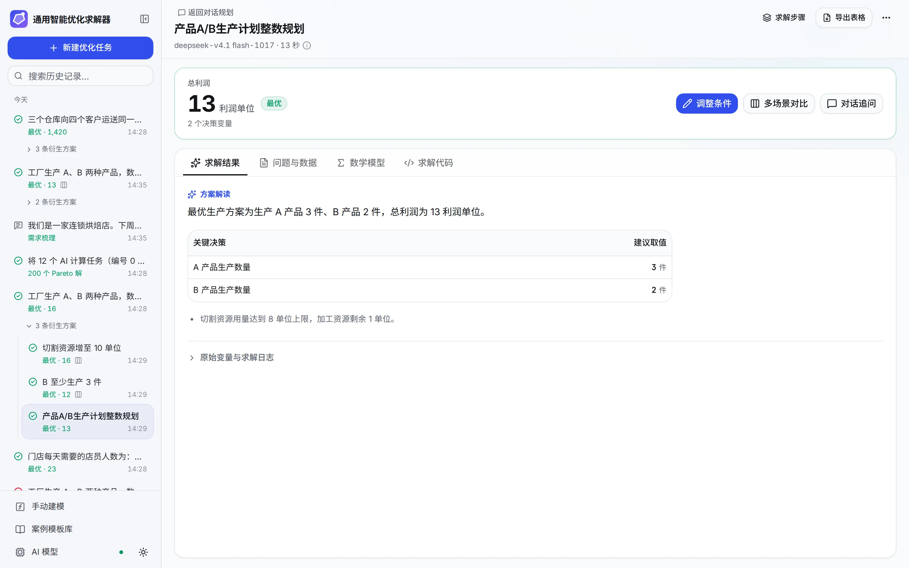

结果页把方案、数学模型、求解代码和求解过程放在一起。顶部先显示目标值、求解状态和决策变量数，下方可阅读方案解读、查看完整变量，或直接导出。
从结论进入细节#
| 区域 | 内容 | 常用操作 |
|---|---|---|
| 顶部摘要 | 目标值、求解状态、决策变量数；多次求解时附目标值走势 | 调整条件、多场景对比、对话追问 |
| 求解结果 | 方案解读与关键决策表 | 了解主要决策 |
| 原始变量与求解日志 | 变量分组、列表、二维矩阵和求解器日志（默认收起） | 筛选变量、下载 CSV |
| 问题与数据 | 当时的题面和附件 | 查看输入快照 |
| 数学模型 | 方法生成的数学表达 | 阅读各版本与差异 |
| 求解代码 | 原生库代码 | 对照变量、目标和约束 |
| 求解步骤 | 各阶段调用、产物与反馈 | 展开产物、错误和修订 |

读一份具体结果#
生产案例的变量 A=3、B=2，总利润13。方案解读把变量关联到产品名称和“件”，目标关联到“总利润”和“元”；完整变量保留原名，便于对照代码。
二维变量按两个索引展开成矩阵，适合阅读人员×日期、仓库×门店等结果。切换列表可以查看原始变量名；筛选适合定位某个员工、产品或时间段。
当问题包含多个互相冲突的目标（通过 AutoCO 的 NSGA-II / MOEA/D / NSGA-III 求解）时，结果页会自动展示 交互式 Pareto 前沿散点图并标出推荐折中解（Knee Point）。点击散点图中的任意解或明细行，即可联动查看对应分配方案并导出。

选择合适的导出#
| 导出 | 包含内容 | 适合用途 |
|---|---|---|
| Excel“求解方案” | 全部变量、零值、业务标签、单位、原名 | 执行安排与后续分析 |
| Excel“问题与条件” | 题面、变更、原问题、附件名、设置和链接 | 追溯方案输入 |
| CSV | 完整变量和值 | 表格分析、脚本处理 |
| Markdown 报告 | 问题、配置、结果、公式、代码、备注 | 阅读、归档与交流 |
点击右上角“导出表格”下载两张工作表。“更多操作 → 导出报告（Markdown）”生成报告。Markdown 结果节最多展示500个非零变量；Excel 与 CSV 保存完整变量。
方案解读与完整数值#
方案解读使用本次预设生成业务名称、单位和简短说明，数值从求解结果读取。变量不超过100个时，解读读取全部变量（含零值）；变量更多时只读取其中一部分。全部数据请看“原始变量与求解日志”和导出文件。解读语言跟随启动时的界面语言。
标题下方的“运行详情”显示模型预设、方法、实际后端、用时和调用量。需要检查某个中间模型时，打开右上角“求解步骤”，找到对应执行与反馈。
从结果继续工作#
“调整条件”创建新方案并显示前后差异；“多场景对比”从当前方案批量计算；“对话追问”在结果旁打开助手。可以先问“列出周二的安排”，再要求新的业务条件。
电脑端可拖动分隔线调整过程或助手的宽度；聚焦分隔线后也能按方向键调整。收起侧边面板后，模型和结果使用完整阅读区域。
看一遍操作#
录屏展示生产方案、两种最低需求场景和附件编辑。可使用播放器字幕、暂停与全屏控件。
查看字幕文字
- 在手动建模页填写生产需求并求解。
- 查看实际方案：A 为 3，B 为 2，总利润 13。
- 输入两个业务场景：B 至少 3 件，以及 B 至少 4 件。
- 同一基准下对比：原方案利润 13，两个场景分别为 12 和 8。
- 打开附件，检查字段和数据。
- 修改 A 的单件利润并保存到需求稿。